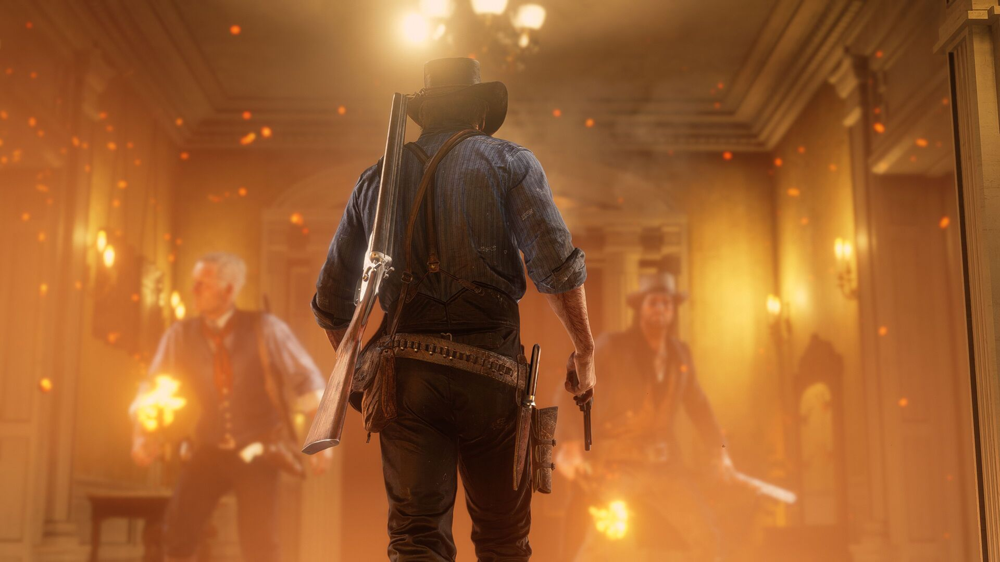
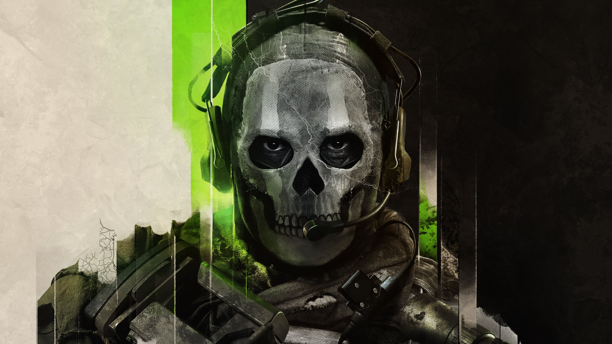
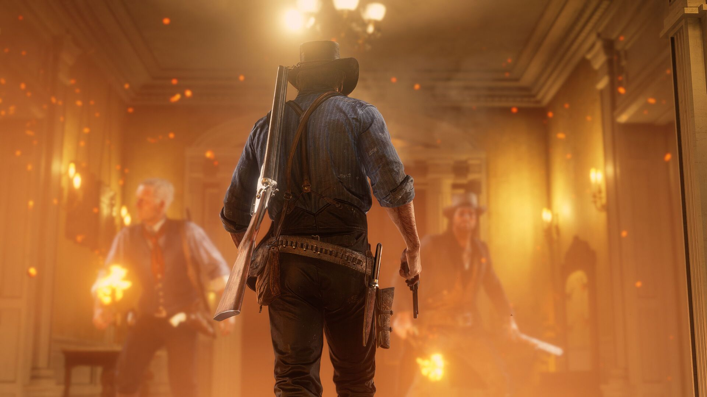
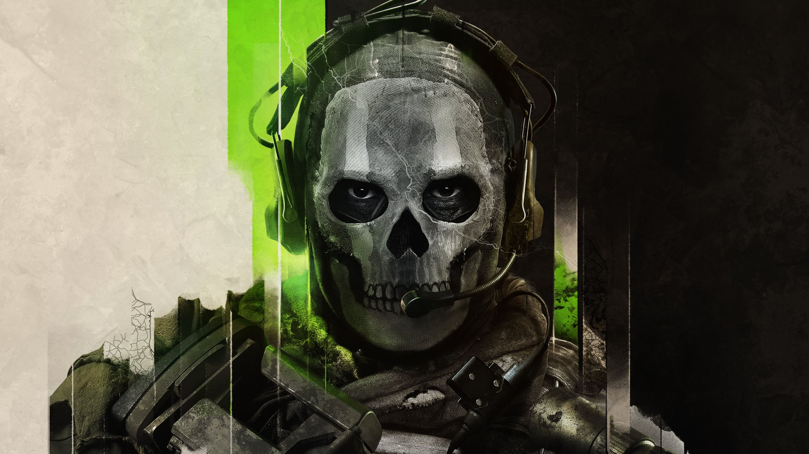

God Of War
"God of War" é uma série de jogos de ação e aventura desenvolvida pela Santa Monica Studio e publicada pela Sony Interactive Entertainment. O jogo segue Kratos, um guerreiro espartano, em sua busca por vingança contra os deuses do Olimpo. A série é conhecida por sua narrativa épica, combates intensos e mitologia grega (e, mais recentemente, nórdica). Em títulos mais recentes, como "God of War" (2018) e "God of War Ragnarök" (2022), a história se desloca para o universo nórdico, onde Kratos tenta redimir-se e proteger seu filho, Atreus, enquanto enfrenta novos desafios e deuses.
The Last of us
"The Last of Us" é um jogo de ação e aventura desenvolvido pela Naughty Dog e lançado pela Sony Interactive Entertainment. A história se passa em um mundo pós-apocalíptico devastado por uma infecção que transforma os humanos em criaturas violentas. O jogo segue Joel, um sobrevivente endurecido, e Ellie, uma jovem com uma importância crucial para a cura da epidemia. Enquanto atravessam os Estados Unidos devastados, eles enfrentam tanto inimigos infectados quanto outros sobreviventes hostis, formando um vínculo profundo e emocional.
Red Dead Redemption
"Red Dead Redemption" é um jogo de ação e aventura desenvolvido pela Rockstar Games. Ambientado no final do século XIX, no Velho Oeste americano, o jogo segue John Marston, um ex-foragido que é forçado a caçar seus antigos comparsas para salvar sua família. O jogo é conhecido por seu mundo aberto expansivo, que permite aos jogadores explorar uma recriação detalhada do Oeste Selvagem, além de seu enredo envolvente e personagens memoráveis. "Red Dead Redemption" combina missões principais e secundárias, interações com personagens e atividades do cotidiano em um cenário rico e imersivo.
Call of Duty
"Call of Duty" é uma série de jogos de tiro em primeira pessoa desenvolvida por várias estúdios, incluindo Infinity Ward, Treyarch e Sledgehammer Games. Lançado pela primeira vez em 2003, o jogo oferece uma variedade de cenários, desde a Segunda Guerra Mundial até guerras modernas e futuristas. A série é conhecida por seu intenso combate, campanhas cinematográficas e modos multijogador altamente competitivos. "Call of Duty" se destaca pela experiência imersiva e pelas inovações constantes em jogabilidade e gráficos.